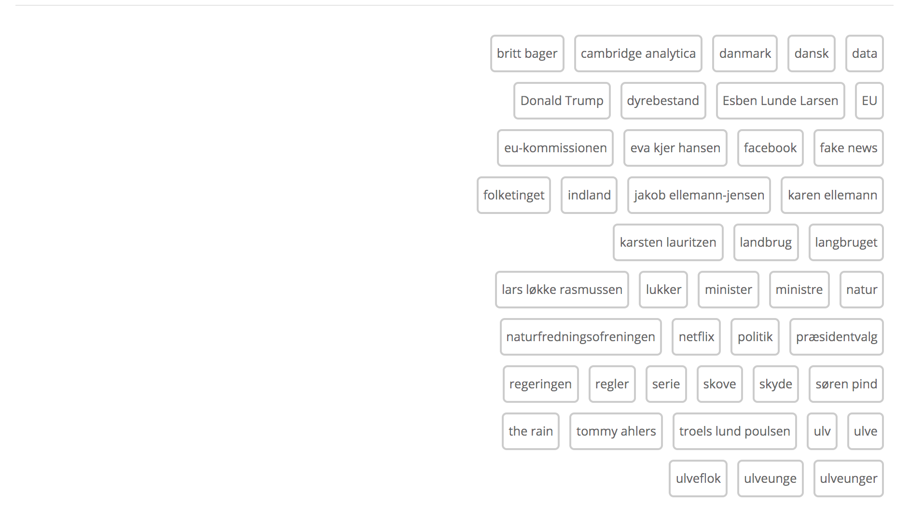

NEWS: FN-ansatte anmeldt for seksuelle overgreb · Hospitaler fjerner rygeforbud · Søren Pind og Esben Lunde Larsen trækker sig fra politik · I dag hyler sirenerne igen – men med et nyt budskab · Dagens billede: Kate Hudson flasher sin baby bump
Vi har udvalgt dagens væsentligste, sjoveste og skæveste nyheder, så du hurtigt bliver opdateret på, hvad der sker i Danmark og resten af verden.
FN-ansatte anmeldt for seksuelle overgreb
FN har i årets første tre måneder modtaget 54 anmeldelser om seksuelle overgreb, begået af egne ansatte. 14 overgreb skal være begået under fredsbevarende operationer. Det skriver Ritzau.
Anklagerne omfatter i alt 66 ofre, inklusive 13 piger under 18 år. Alderen på de øvrige påståede ofre er ukendt.
– Alle anklager rettet mod vores ansatte underminerer vores værdier og principper og det offer, som vores ansatte, der arbejder med stolthed og professionalisme i nogle af verdens farligste områder, bringer, siger Farhan Haq, der er talsmand for FN’s generalsekretær António Guterres.
FN-generalsekretær António Guterres har lovet at udrydde seksuelle overgreb i organisationen.
Hospitaler fjerner rygeforbud
Siden 2010 har der været rygeforbud udendørs som indenfor på Nordsjællands Hospital i Hillerød og Frederikssund. Men patienter og pårørende har set stort på forbuddet, og nu stilles der rygepavilloner op, i håb om at rygerne vil benytte dem – i stedet for at ryge og skodde smøger rundt omkring på matriklerne. Det skriver TV 2 og Frederiksborg Amts Avis.
I starten af maj bliver der derfor etableret særlige rygeområder i Hillerød og i Frederikssund. Rygeområderne er udelukkende målrettet patienter og pårørende, personalet må stadig ikke ryge i arbejdstiden.

Søren Pind og Esben Lunde Larsen trækker sig fra politik
Søren Pind (V) stopper med øjeblikkelig virkning som uddannelses- og forskningsminister, ligesom han forlader Folketinget. Samtidig meddeler Miljø- og fødevareminister Esben Lunde Larsen (V) at han stopper som minister, men fortsætter i Folketinget indtil næste valg. Det skriver TV 2.
Tirsdag eftermiddag meddelte begge ministre, at de vil stoppe med øjeblikkelig virkning. Esben Lunde Larsen fortsætter dog i Folketinget frem til næste valg.
I dag onsdag, vil statsminister Lars Løkke Rasmussen (V) møde op hos dronningen for at ændre i regeringens sammensætning.
I dag hyler sirenerne igen – men med et nyt budskab
Når Beredskabsstyrelsen onsdag tester landets sirener, har lyden en ny og mere enkel betydning for borgerne. Det skriver Ritzau.
– Gå ind og søg information hos DR og TV2.
Sådan lyder beskeden, hvis landets sirener hyler. Det meddeler Beredskabsstyrelsen forud for “Store Hyledag”, som er dagen, hvor alle landets sirener bliver testet. Det sker i dag onsdag.
– Sirenerne kan ikke sige, hvad der er sket. De kan kun sige en lyd. Så derfor er det vigtigt, at man går ind og søger information om, hvad der er sket, og hvad man skal gøre, siger Lars Aabjerg Pedersen, der er kommunikationschef i Beredskabsstyrelsen.
Dagens billede: Kate Hudson flasher sin baby bump
Kate Hudson er gravid med sit tredje barn. Her er hun sammen med sin veninde Angi Fletcher, som også venter barn nummer tre.
Læs mere fra samme kategori